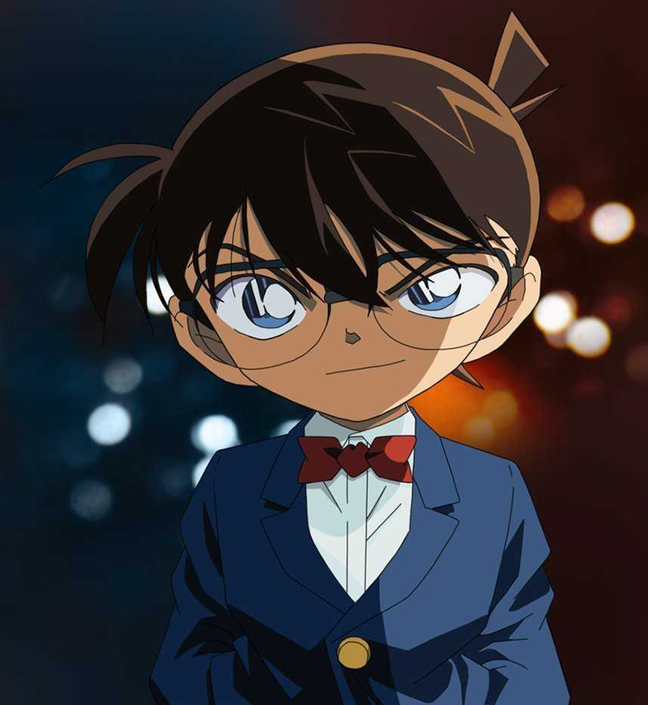

Shinichi là một thám tử trung học cấp III nổi tiếng với việc phá được nhiều vụ án hóc búa. Trong một lần đang đi điều tra, Shinichi đã bị thành viên của Tổ chức Áo đen phát hiện và đánh cậu bất tỉnh. Chúng sau đó đã ép cậu phải uống loại thuốc độc vừa được Tổ chức điều chế mang tên APTX 4869 để giết cậu nhằm bịt đầu mối. Thế nhưng, Shinichi không chết mà thay vào đó lại bị teo nhỏ trở thành một đứa bé lớp 1. Cậu liền tới nhà của ông tiến sĩ Agasa, một người bạn thân của gia đình mình để tìm sự giúp đỡ. Từ đây, cậu bắt đầu sống với thân phận mới là Edogawa Conan.